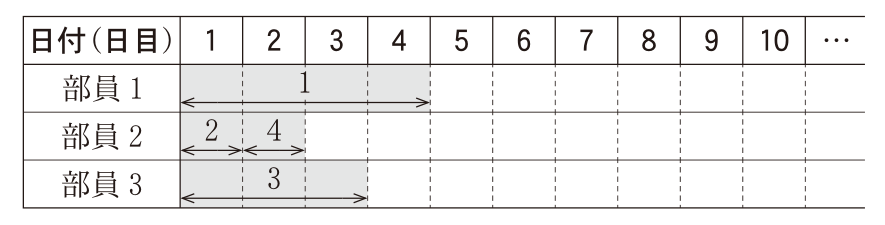
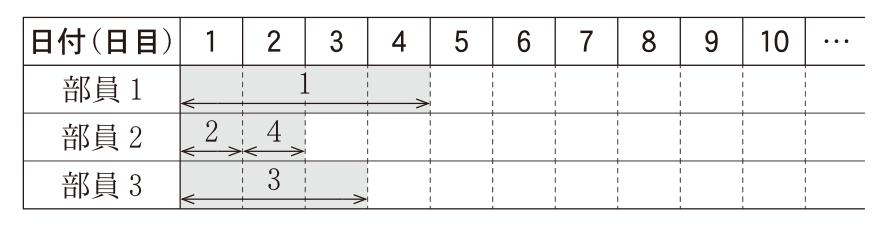

第3問 次の文章を読み，後の問い（問1～3）に答えよ。（配点25）
K さんが所属する工芸部では毎年，文化祭に向けた集中製作合宿を開催し，複数の工芸品を部員全員で分担して製作している。K さんは今年，工芸品を製作する担当の割当て作業を行うことになった。
問1 次の文章を読み，空欄 ア ～ オ に当てはまる数字をマークせよ。
表1は今年製作する各工芸品（1から順に番号を振る。）の製作日数である。製作日数は部員によって変わることはなく，例えば工芸品1の製作日数はどの部員が製作しても4日である。なお，一つの工芸品の製作は一人の部員が担当し，完了するまでその部員は他の工芸品の製作には取り掛からない。
| 工芸品 | 1 | 2 | 3 | 4 | 5 | 6 | 7 | 8 | 9 |
|---|---|---|---|---|---|---|---|---|---|
| 製作日数 | 4 | 1 | 3 | 1 | 3 | 4 | 2 | 4 | 3 |
K さんは図1の割当図を作成し，今年の工芸部の部員3名について，工芸品の番号順に割当てを決めていくことにした。

図1では，最上段に日付を合宿初日から順に1日目，2日目，…と表して記載している。その下に各部員（1から順に番号を振る。）に割り当てた工芸品の番号を，その製作期間を表す矢印とともに記載している。例えば，工芸品4は部員 ア が イ 日目から1日間製作することが，図1から読み取れる。
図1では工芸品4までが割り当てられており，部員1が5日目で割当てがない。このことを，部員1は5日目で空きであるという。
K さんは各工芸品の担当と期間を割り当てていく際，次の規則を用いた。
最も早く空きになる部員（複数いる場合はそのうち最小の番号の部員）が，空きになった日付から次の工芸品を担当する。
K さんは，工芸品5以降についても上の規則を用いて割り当て，各工芸品の担当と期間を一覧にした図2のような文面のメールを部員全員に送信した。
工芸品1 … 部員1：1日目～4日目
工芸品2 … 部員2：1日目～1日目
工芸品3 … 部員3：1日目～3日目
工芸品4 … 部員ア：イ日目～イ日目
工芸品5 … 部員ウ：エ日目～オ日目
…
工芸品9 … 部員1：7日目～9日目
以上を手作業で作成するのが手間だと感じたK さんは，図2のような文面を自動的に表示するプログラムを作成しようと考えた。
問2 次の文章を読み，空欄 カ ， ク に当てはまる数字をマークせよ。また，空欄 キ に入れるのに最も適当なものを，後の解答群のうちから一つ選べ。
K さんはまず，次の規則（再掲）に従い，いくつかの工芸品がすでに割り当てられた状況で，その次の工芸品の担当部員を表示するプログラムを作ることにした。
最も早く空きになる部員（複数いる場合はそのうち最小の番号の部員）が，空きになった日付から次の工芸品を担当する。
最も早く空きになる部員の番号を求めるために，各部員が空きになる日付を管理する配列Akibi を用意する。この配列の添字（1から始まる。）は部員の番号であり，要素はその部員が空きになる日付である。
例えば，図1の状況では，配列Akibi は図3のようになる。図1で部員1は5日目に空きになるため，図3で要素Akibi[1]は5となる。同様に要素Akibi[3]は カ となる。

| 添字 | 1 | 2 | 3 |
|---|---|---|---|
| Akibi | 5 | 3 | カ |
図3において，要素Akibi[ ウ ]が配列Akibi の最小の要素であることから，部員 ウ が最も早く空きになることがわかる。
この考え方に基づき，K さんは配列Akibi の要素と，部員数が代入された変数buinsu を用いて，次に割り当てる工芸品の担当部員を表示するプログラムを作成した（図4）。ここでは例として，(01)行目で図3のように配列Akibi を設定している。
仮に部員数が変わったとしても，配列Akibi と変数buinsu を適切に設定すれば，このプログラムを用いることができる。部員が5名に増えた場合，(01)行目を例えばAkibi = [5, 6, 4, 4, 4] に，(02)行目をbuinsu = 5 に変更して図4のプログラムを実行すると，(06)行目の代入が ク 回行われ，「次の工芸品の担当は部員3です。」と表示される。
問3 次の文章を読み，空欄 ケ ～ シ に入れるのに最も適当なものを，後の解答群のうちから一つずつ選べ。
次にK さんは，工芸部の部員数と，表1のような各工芸品の製作日数を用いて，図2のような一覧を表示するプログラムを作ることにした。
| 工芸品 | 1 | 2 | 3 | 4 | 5 | 6 | 7 | 8 | 9 |
|---|---|---|---|---|---|---|---|---|---|
| 製作日数 | 4 | 1 | 3 | 1 | 3 | 4 | 2 | 4 | 3 |
工芸品1 … 部員1：1日目～4日目
工芸品2 … 部員2：1日目～1日目
工芸品3 … 部員3：1日目～3日目
工芸品4 … 部員ア：イ日目～イ日目
工芸品5 … 部員ウ：エ日目～オ日目
…
工芸品9 … 部員1：7日目～9日目
表1をプログラムで扱うために，K さんは工芸品の番号順に製作日数を並べた配列Nissu（添字は1から始まる。）を用意した。さらに，工芸品数9が代入された変数kougeihinsu，各部員が空きになる日付を管理する配列Akibi，部員数3が代入された変数buinsu を用いて，図2の一覧を表示するプログラムを作成した（図5）。最初はどの部員も合宿初日すなわち1日目で空きであるため，(03)行目で配列Akibi の各要素を1に設定している。
工芸品の番号を表す変数kougeihin を用意し，(05)～(11)行目で各工芸品に対して順に担当と期間を求めていく。破線で囲まれた(06)～(09)行目は問2における図4の(03)～(06)行目と同じもので，次に割り当てる工芸品の担当部員の番号を変数tantou に代入する処理を行う。(10)行目で図2の1行分を表示し，(11)行目で担当部員が空きになる日付を更新する。